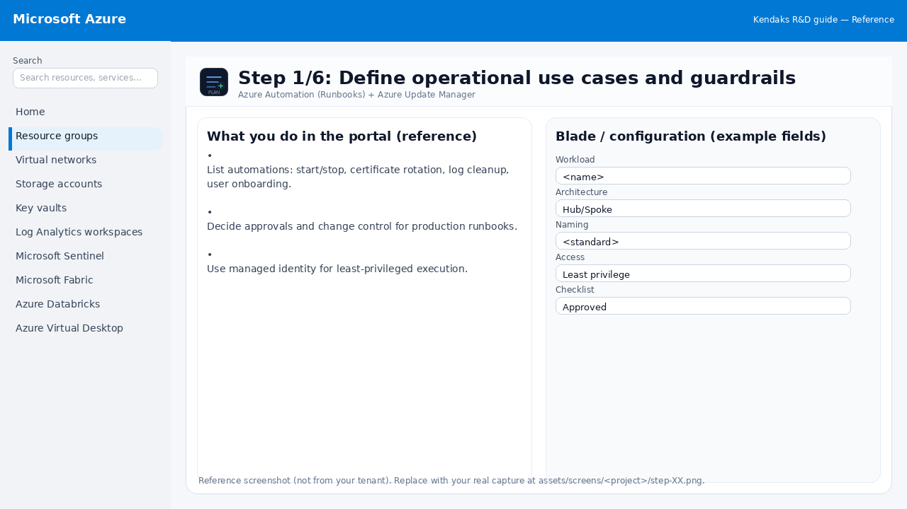
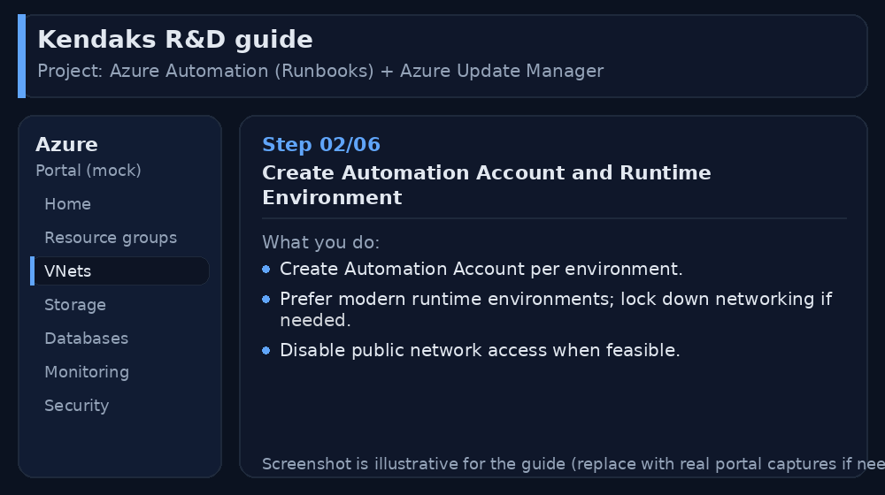
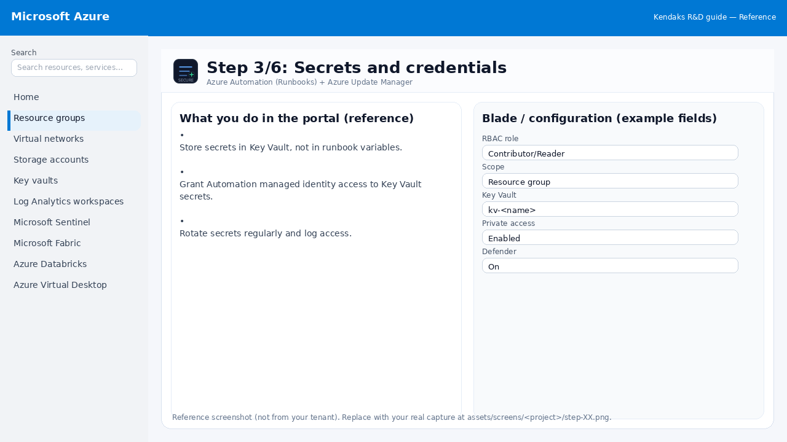
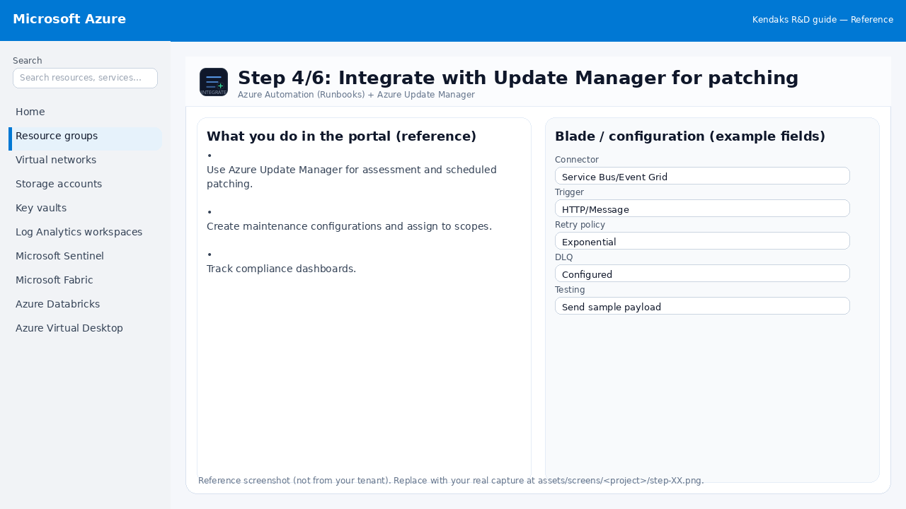
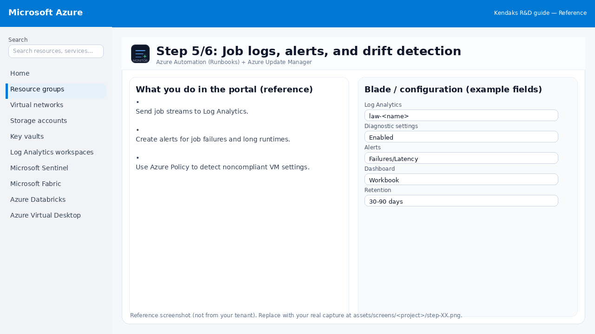
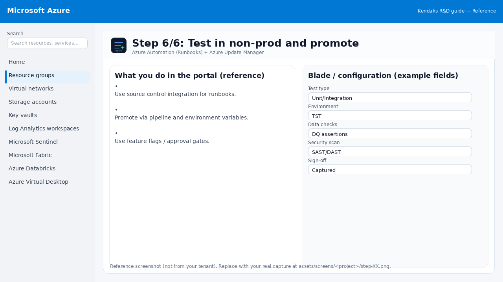

Azure Automation (Runbooks) + Azure Update Manager
Category: Operations
Scenario: Ops team needs repeatable remediation for common incidents and patch governance. Example: 'Kendaks Ops' automates VM start/stop schedules and monthly patch windows with audit trails.
Architecture diagram
High-level view of the main components and data/control flows.
Low-level architecture diagram (Visio-style)
Implementation view (networking, security, ops). Click to open full size.
Low-level architecture details
(No low-level text provided.)
Step-by-step implementation
Step 1/6
Define operational use cases and guardrails

Reference portal screenshot (click to zoom). Replace with your tenant capture if needed.
List automations: start/stop, certificate rotation, log cleanup, user onboarding. Decide approvals and change control for production runbooks. Use managed identity for least-privileged execution.
Validation checklist
Stakeholders have signed off the scope, SLAs, and data/security requirements. You have documented naming standards, environments, and ownership (RACI).
Step 2/6
Create Automation Account and Runtime Environment

Reference portal screenshot (click to zoom). Replace with your tenant capture if needed.
Create Automation Account per environment. Prefer modern runtime environments; lock down networking if needed. Disable public network access when feasible.
Validation checklist
Deployment completed; smoke tests passed; rollback plan confirmed.
Step 3/6
Secrets and credentials

Reference portal screenshot (click to zoom). Replace with your tenant capture if needed.
Store secrets in Key Vault, not in runbook variables. Grant Automation managed identity access to Key Vault secrets. Rotate secrets regularly and log access.
Validation checklist
Security baseline applied (Defender/Policy/WAF/Firewall rules as applicable). No public endpoints unless explicitly approved; private endpoints verified where applicable. Alerts are configured for high-risk events.
Step 4/6
Integrate with Update Manager for patching

Reference portal screenshot (click to zoom). Replace with your tenant capture if needed.
Use Azure Update Manager for assessment and scheduled patching. Create maintenance configurations and assign to scopes. Track compliance dashboards.
Validation checklist
Connections/authentication succeed and test messages/records flow through. Retries/DLQ/error handling are configured and validated with a forced failure.
Step 5/6
Job logs, alerts, and drift detection

Reference portal screenshot (click to zoom). Replace with your tenant capture if needed.
Send job streams to Log Analytics. Create alerts for job failures and long runtimes. Use Azure Policy to detect noncompliant VM settings.
Validation checklist
Logs and metrics are flowing (check Log Analytics / Monitor). Alerts trigger correctly (test alert path to email/Teams/ITSM).
Step 6/6
Test in non-prod and promote

Reference portal screenshot (click to zoom). Replace with your tenant capture if needed.
Use source control integration for runbooks. Promote via pipeline and environment variables. Use feature flags / approval gates.
Validation checklist
UAT completed with representative users and scenarios. Performance meets baseline; issues tracked and remediated.